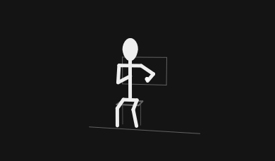
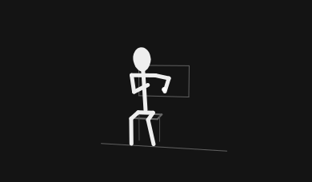
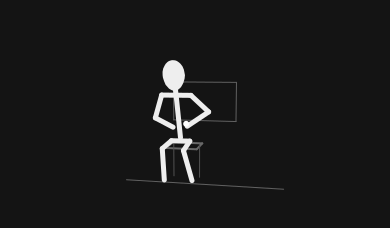
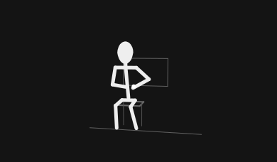
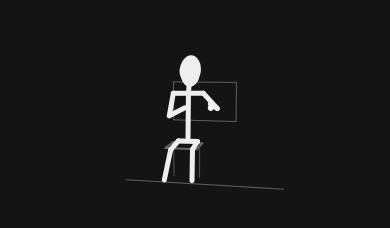
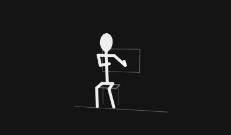
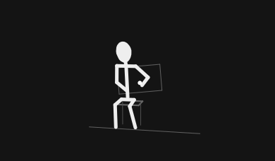

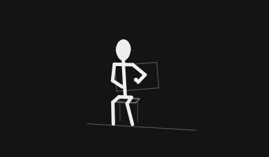
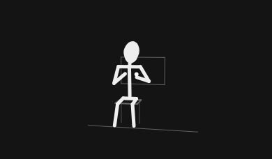
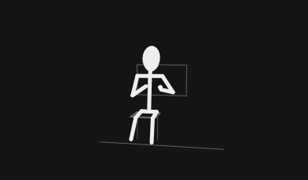
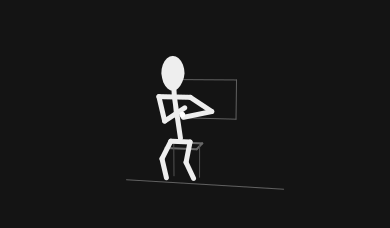
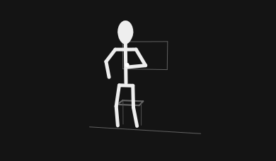
Monochrome joint silhouettes for human review. This diagnostic omits mesh, face, hue, captions inside the frame and light trails. It does not automatically establish emotional readability.











